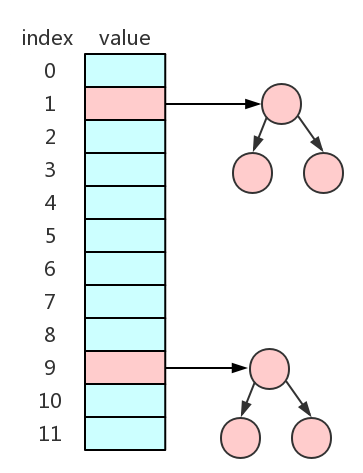

本文为王争老师在『极客时间』中的课程《数据结构与算法之美》的学习笔记，想要学习原文的同学购买相关课程学习。如有侵权请联系作者删除。
散列表的理解
散列表也叫Hash表，具有像数组那样根据随机访问的特性，可以根据key来获得value。
接下来举一个具体实例来理解散列表。当学校举办校运动会，每个运动员都有一个号码牌，这个号码牌的是根据“年级+班级+序号”组成，比如初一三班的小岛的号码牌为070311，其中07表示七年级即初一，03表示三班,11表示班上第11个班上参加运动会的序号。这个时候我们如何存储运动员的信息，来实现通过号码牌来查找运动员的信息？
按照以往的经验，我们可以通过使用数组来存储，其中号码牌即为数组的下标，数组的值为运动员的信息。但是这里有一个问题，运动员的号码牌不是连续的，而申请数组的时候内存空间是连续的，因此会有很多内存空间浪费。
这个时候就可以使用散列表，处理过程如下所示：
从上图可以观察到，我们在存储运动员信息的时候，不是将整个号码牌作为数组的下标，而是将号码牌先进行hash函数（对100取余）处理后得到的数作为数组的下标，这样就可以数组的大小大大减小，并且在查找到时候也可以通过号码牌来查找对应的运动员的信息。细心的小伙伴观察到，如果hash函数处理后的余数一样该怎么办？比如，号码牌为080211的运动员就会和070311运动员在hash函数处理后得到的数是一样，因此会发生冲突，这个就是散列冲突的问题，在后续的讲解中会有相应的解决方案。这里先讲解Hash函数。
Hash函数
从上面的图可以观察到，中间的部分的部分为Hash函数，也称为散列函数。它在散列表中起着关键作用。Hash函数一般使用hash(key)表示，其中key表示元素的键值部分，hash(key)的表示经过Hash函数计算得到的Hash值（散列值）。
对于上面运动会的问题，我们的Hash函数是将号码牌转为整型后对100取余。不同的应用实例的Hash函数不同，该怎么去构造Hash函数，一般遵循一下三条：
Hash函数计算得到的散列值是一个非负整数；- 如果
key1 == key2，那么hash(key1) == hash(key2); - 如果
key1 != key2，那么hash(key1) != hash(key2).
对于第一条很好理解，因为数组的下标是从0开始，所以Hash函数生成的Hash值也需要是非负整数。
对于第二条，相同的key经过Hash函数处理后得到的Hash值应该也是相同的。
对于第三条，逻辑上应该是这样的，不同的key经过Hash函数处理后得到的Hash值应该是不相同的，但是想要找到一条不同的key对应的Hash值都不一样几乎为不可能的，数组的存储空间是有限的，会加大散列冲突的概率。对于散列冲突，我们需要通过其他的方式来解决。
散列冲突
上一小节已经分析了散列冲突产生的原因，我们一般使用开放寻址法和链表法来解决。
开放寻址法
开放寻址法的主要思想是当出现散列冲突时，我们去重新寻找下一个位置，直到找到空闲位置为止，将数据放置到找到的空闲位置。那么如何去寻找空闲位置呢？一般有线性探测法、二次探测法和双重散列法。
线性探测法
如上图所示，就是使用线性探测法进行寻址。table部分红色区域表示该部分已经存储数据，当号码牌060702通过Hash函数进行散列后，得到的区域已经存储了数据，因此需要从当前为止开始依次向后查找，遇到空闲的位置即为找到存储数据的位置。
在Hash表中进行查找元素的过程与插入的过程相似。首先通过Hash函数进行散列后求出对应的散列值，然后比较数组中的该位置的元素是否与要查找的元素相等，若相等，则找到对应的元素；若不想等，则依次向后查找。如果遍历数组时，遇到空闲位置还没找到，则说明散列表中没有对应的元素。
通过插入和查找过程可以发现，当散列表中的数据越来越多时，散列冲突会越来越大，数组中的空闲位置会越来越少，线性探测的时间会越来越久。最坏的时间复杂度为O(n)。
二次探测法
将线性探测的寻址方法表示出来即为：hash(key)+0，hash(key)+1，hash(key)+2……
二次探测法与线性探测法很类似，只是步长由原来的1变为二次方即hash(key)+0，hash(key)+1^2，hash(key)+2^2……
双重散列法
双重散列是指我们不仅仅使用一个散列函数，而是使用一组散列函数。如hash1(key)，hash2(key)，hash3(key)……我们先用第一个散列函数计算，如果存储位置已经被占用，则使用第二个散列函数，以此类推直到找到空余的存储位置即可。
链表法
链表法比开放寻址法更为常用，在JDK8以前的HashMap底层源码就是使用链表法进行实现的。其结构图如下所示：
如上图所示，在散列表中每个桶或者槽会对应一条链表，所有散列相同的元素会在存储在同一槽中对应的链表中。
在插入时，通过Hash函数计算出对应的槽位，然后将其插入到对应的链表中即可；当查找时，也是通过Hash函数计算出相应的槽位，然后查找相应的元素即可。
Hash函数的确定
通过前面学习到，Hash表的查询效率并不是O(1)，它与Hash函数、散列冲突等因素有关。如果Hash函数确定得不好，可能导致散列冲突概率升高，查询效率下降。那么，该如何设计Hash函数呢？
首先，Hash函数的设计一般设计得不要过于复杂，过于复杂的Hash函数会导致计算时间过多，从而影响散列表的性能；
其次，Hash函数生成的值要尽可能随机并且均匀分布，这样才能避免或者最小化散列冲突，而且即使出现冲突，散列到每个槽中的数据也会比较平均，不会导致某些槽中的数据过多，而另一部分槽中的数据过少的情况。
传统的Hash函数的设计方法有直接寻址法、平方取中法、折叠法、随机数法等，也可以根据实际情况自己设计Hash函数。
装载因子的确定
为了定量的表示Hash表中空位的多少，定义装载因子：1
Hash表的装载因子 = 填入表中的元素个数 / Hash表的长度
由公式可知，装载因子越大，说明Hash表中的元素越多，空闲位置越少，散列冲突的概率越大，散列表的性能就会下降。
对于没有频繁插入和删除的静态数据结合来说，可以根据数据的特点和分布情况设计出符合这些数据的Hash函数，从而减少了散列冲突。
但是大部分情况下是动态数据，数据集合是频繁变动的，我们无法事先知道数据的个数，因此也无法事先申请一个足够大的Hash表。随着数据加入，填入表中的元素个数增多，装载因子增大，当装载因子达到一定程度时，散列冲突便不可接受，因此我们无法根据数据的特征和分布情况设计出符合这些数据的Hash函数，而是需要动态扩容，重新申请一个更大的Hash表，将数据重新存储到新的Hash表中。
如下图中的散列表，当装载因子达到0.8时进行扩容，装载因子变为0.4，原来的数据就会存储在新的Hash表中。
当数据插入到Hash表时，如果装载因子还未达到临界值，此时还不需要扩容，插入的数据非常快，但如果装载因子达到了临界值，这是就需要先进行扩容，然后再插入数据，这个时候就会变得很慢。
当数据需要从Hash表中删除时，如果Hash表已经经历过扩容，随着数据的删除，空闲空间会越来越多。当程序对内存空间非常敏感时，可以设置当装载因子小于某个临界值时，启动动态缩容，让内容空间得到充分利用；当程序对内存空间不太敏感时，就不需要进行动态缩容处理。
动态扩容策略
为了减少动态扩容耗时，我们可以将扩容的操作穿插在插入操作过程中。具体如下图所示：
这样每次插入时迁移一个数据，没有集中一次性迁移数据那样耗时，不会形成明显的阻塞。由于迁移过程中，有新旧两个Hash表，查找数据时，先在新的Hash表中进行查找，如果没有，再去旧的Hash表中进行查找。
合理的选择Hash冲突解决办法
常用的解决Hash冲突的方法有开放寻址法和链表法。在Java中ThreadLocalMap采用线性探测的开放寻址法来解决冲突，LinkedHashMap采用了链表法解决Hash冲突。
开放寻址法
- 优点：将数据存储在数组中；利用CPU缓存加快查询速度；并且序列化简单。
- 缺点：删除数据麻烦，需要特殊标记已删除的数据；需要将所有数据存储在一个连续的存储空间中，比起链表来说，冲突的代价更高。
- 适用场景：当数据量较小、装载因子小的时候可以采用开放寻址法。
链表法
- 优点：对内存利用率高；对装载因子的容忍度高（开放寻址法只适用在装载因子小于1的情况，接近1时，就可能会有大量散列冲突，导致大量的探测、再散列，性能下降很多。但对于链表法，只要散列函数的值随机均匀，当装载因子大于1时，只是对应的链表长度增加，这里也可以通过将链表改造为跳表或者红黑树的方式加快查找速度）
- 缺点：由于链表需要存储指针，存储较小的对象时，指针占用的内容消耗比较大；链表不支持随机查找，查找效率较低。
- 适用场景：适合于存储大对象、数据量大的散列表；比开放寻址法更加灵活，支持更多的优化策略，如使用红黑树替代链表。
- 优化：我们可将链表法中的链表替换成更加高效的动态的数据结构，如跳表、红黑树等。

Java中的HashMap分析
HashMap是一个成熟的散列表，在Java中得到了广泛应用，下面来具体分析。
初始大小
如下图所示，HashMap默认的初始大小为16。
如果事先知道数据量的大小，可以通过修改初始大小，减少动态扩容次数，来提升HashMap性能。
装载因子和动态扩容
如下图所示，HashMap默认的装载因子为0.75。
当HashMap中元素个数超过0.75*capacity（capacity表示HashMap实际的容量），就会启动动态扩容，每次扩容的大小为原来的两倍。
Hash冲突的解决办法
在JDK1.8之前，HashMap底层采用的链表法来解决冲突。即使装载因子和Hash函数设计的再合理，随着数据量的增加也会出现链表过长的情况，一旦链表过长，严重影响了HashMap的性能。
在JDK1.8中对HashMap底层做了优化。当链表长度大于8时，链表就转化为红黑树，当链表小于8时，将红黑树转化为链表。因为当链表过长的时候，查找的效率将会变慢，利用红黑树快速增删改查的特性，可以提高HashMap的性能，而链表不长时，红黑树的快速增删改查的特性就不太明显，并且红黑树的还有维护成本，因此不需要将链表转化为红黑树。
Hash函数
HashMap中的Hash函数如下图所示，追求简单高效且分布均匀。